Степень с целым показателем — это степень, показателем которой является любое целое число.
В прошлом уроке мы изучили степень с натуральным показателем. Этот вид степени тоже является степенью с целым показателем, поскольку натуральные числа относятся к целым числам.
Также, мы рассмотрели степень, показателем которой является 0. Этот вид степени тоже является степенью с целым показателем, поскольку 0 относится к целым числам.
Рассмотрим ещё один вид степени с целым показателем, а именно показателем которой является целое отрицательное число. Выглядят эти степени так:
2−2, 10−7, a−8
В дальнейшем любую степень с натуральным, нулевым или целым отрицательным показателем, мы будем называть степенью с целым показателем.
Правило вычисления
Рассмотрим следующую последовательность степеней:
20, 21, 22, 23, 24, 25
Первая степень в этой последовательности это степень 20. Предыдущая степень с целым показателем будет уже с отрицательным показателем и выглядеть как 2−1.
2−1, 20, 21, 22, 23, 24, 25
А предыдущая степень с целым показателем, которая располагается до 2−1, будет степень 2−2
2−2, 2−1, 20, 21, 22, 23, 24, 25
Продолжим эту последовательность в сторону степеней с целыми отрицательными показателями:
2−5, 2−4, 2−3, 2−2, 2−1, 20, 21, 22, 23, 24, 25
Теперь попробуем вычислить эти степени. Степени с натуральными показателями и степень, показателем которой является 0, вычисляются легко:
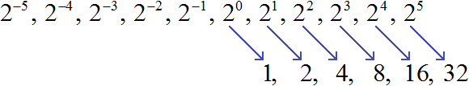
А как вычислить степени с отрицательными показателями? Для начала немного отойдём от темы и затронем несколько закономерностей.
В отрицательную степень число возводится немного иначе. Следует понимать, что если при возведении в положительную степень число увеличивается, то при возведении в отрицательную степень это число наоборот уменьшается.
Если мы возьмём какое-нибудь число n, и начнём последовательно увеличивать его степень, то получим последовательность чисел, в которой каждое число меньше следующего в n раз.
Например, возьмём число 2. Начиная с нуля будем последовательно увеличивать его показатель:
20, 21, 22, 23, 24, 25
Вычислим эти степени:
1, 2, 4, 8, 16, 32
Получили последовательность чисел, в которой каждое число меньше следующего числа в 2 раза. Тогда логично предположить, что число, располагающееся до единицы, будет в два раза меньше единицы. Его можно получить, если 1 разделить на 2
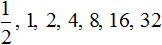
Вернёмся к нашей исходной последовательности, где мы вычисляли степени. Получается, что степень 2−1 мы вычислили. Она равна рациональному числу 
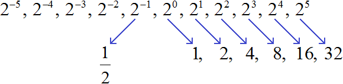
Предыдущее за числом  должно быть в два раза меньше, чем
должно быть в два раза меньше, чем  . Чтобы его получить разделим
. Чтобы его получить разделим  на 2
на 2

Получили  . Это значение степени 2−2
. Это значение степени 2−2
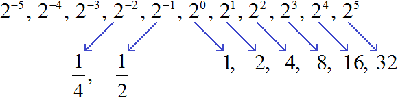
Продолжая деление на 2 можно получить значения остальных степеней с целыми отрицательными показателями:
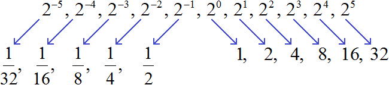
Заметим, что в данной последовательности значения степеней с отрицательными показателями являются обратными числами к значениям степеней с натуральными показателями:
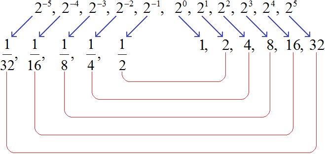
К примеру, значение степени в 22 есть число 4. А значение степени 2−2 есть число  . Числа 4 и
. Числа 4 и  являются обратными друг другу. А степени 22 и 2−2 отличаются только тем, что у них противоположные показатели.
являются обратными друг другу. А степени 22 и 2−2 отличаются только тем, что у них противоположные показатели.
Можно сделать вывод, что для вычисления степени с отрицательным показателем, нужно записать дробь, в числителе которой единица, а в знаменателе та же самая степень, но с противоположным показателем. Покажем это на примере степени 2−2
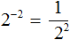
Вычислим степень, находящуюся в знаменателе:
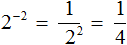
Таким образом, чтобы вычислить степень вида a−n можно воспользоваться следующим правилом:
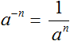
Данное правило можно доказать, используя правило деления степеней с одинаковыми основаниями. Допустим, потребовалось вычислить выражение 23 : 25. Запишем это деление в виде дроби
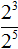
Воспользуемся правилом деления степеней с одинаковыми основаниями:
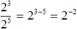
Получили степень с отрицательным показателем 2−2. Ранее мы выяснили, что её значение равно  . Чтобы убедиться в этом, попробуем вычислить выражение как обычно, не используя правило деления степеней:
. Чтобы убедиться в этом, попробуем вычислить выражение как обычно, не используя правило деления степеней:
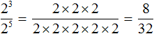
Получили рациональное число
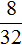
. Сократим его на 8. Тогда получим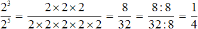
Пример 2. Найти значение выражения 9−2
Воспользуемся правилом вычисления степени с целым отрицательным показателем:
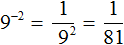
Пример 3. Найти значение выражения 3−3
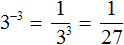
Следует упомянуть, что правило
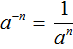
работает только тогда, когда a ≠ 0.Действительно, если a будет равным нулю, то в знаменателе получим 0, а на нуль делить нельзя.
Пример 4. Найти значение выражения
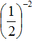
Пример 5. Найти значение выражения
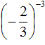
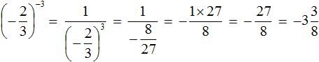
При возведении обыкновенных дробей в отрицательную степень, можно пользоваться формулой
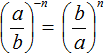
. Решим предыдущие два примера с помощью этой формулы: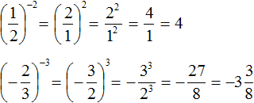
Желательно уметь возводить обыкновенную дробь в отрицательную степень как с помощью формулы, так и без неё.
Тождественные преобразования
Все тождественные преобразования, которые мы рассматривали при изучении степени с натуральным показателем, сохраняются и для степеней с целыми отрицательными показателями.
Например, чтобы представить выражение 2−1 × 2−3 в виде степени, можно воспользоваться основным свойством степени:
2−1 × 2−3 = 2−1 + (−3) = 2−4
Пример 2. Найти значение выражения 5−15 × 516
Воспользуемся основным свойством степени:
5−15 × 516 = 5−15 + 16 = 51 = 5
или:
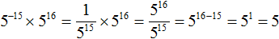
Видим, что первый вариант решения намного проще и удобнее.
Пример 3. Найти значение выражения (10−4)−1
Воспользуемся правилом возведения степени в степень:
(10−4)−1 = 10−4 × (−1) = 104 = 10000
Пример 4. Найти значение выражения
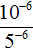
Представим число основание 10 в виде произведения 2 × 5. Тогда числитель примет вид (2 × 5)−6
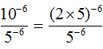
В числителе применим правило возведения в степень произведения:
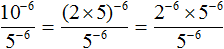
Сократим получившуюся дробь на 5−6
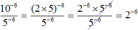
Вычислим степень 2−6
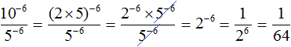
Поднятие степени из знаменателя в числитель и наоборот
Если знаменатель дробного выражения содержит степень, то данную степень можно поднять в числитель, изменив знак показателя этой степени на противоположный. Значение выражения при этом не меняется. Данное преобразование иногда используется при упрощении выражений.
Рассмотрим следующее равенство:
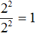
Данное равенство является верным, поскольку выражение
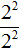
равно 20, а любое число в нулевой степени есть единица.Попробуем поднять степень 22 из знаменателя в числитель, изменив знак показателя этой степени на противоположный. При этом, поднятую степень и ту степень, которая располагалась в числителе, соединим знаком умножения:
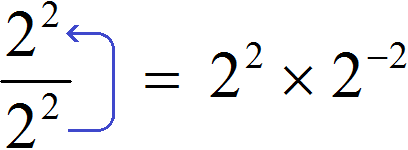
Получили выражение 22 × 2−2. Чтобы его вычислить, воспользуемся основным свойством степени:
22 × 2−2 = 22 + (−2) = 20 = 1
Получился тот же результат, что и раньше. Значит значение выражения не изменилось. Как это работает?
Если в равенстве поменять местами левую и правую часть, то получим равенство
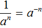
. Это позволяет заменять в выражениях дробь вида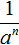
на тождественно равное ей выражение a−n.Теперь представим выражение в виде произведения
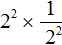
. То есть заменим деление умножением. Напомним, что при замене деления умножением, делимое умножают на число, обратное делителю. А обратное делителю число в данном случае это дробь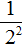
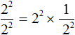
Теперь воспользуемся правилом . В произведении заменим дробь на тождественно равное ей выражение 2−2
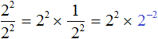
Далее, как и раньше применяем основное свойство степени:
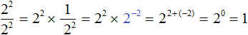
Получился тот же результат 1.
Таким же образом можно опустить степень из числителя в знаменатель, изменив знак показателя этой степени на противоположный.
Рассмотрим выражение
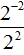
. Чтобы найти его значение, воспользуемся правилом деления степеней с одинаковыми основаниями. В результате получим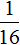
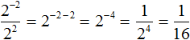
Теперь попробуем решить этот пример, опустив степень 2−2 из числителя в знаменатель, изменив знак показателя этой степени на противоположный. При этом, опущенную степень 2−2 и ту степень, которая располагалась в знаменателе, соединим знаком умножения. А в числителе останется единица:
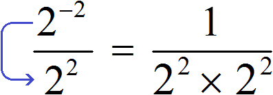
Дальнейшее вычисление не составит особого труда:
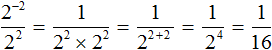
Как и в прошлом примере выражение представимо в виде произведения
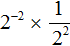
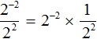
Этим и объясняется появление единицы в числителе, после того как степень 2−2 была опущена в знаменатель.
Переносимых в знаменатель либо в числитель степеней может быть несколько. Например, знаменатель дроби
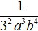
содержит степени 32, a3, b4. Перенесём эти степени в числитель, изменив знаки их показателей на противоположные. В результате получим выражение 3−2a−3b−4.Пример 2. Поднять степени из знаменателя дроби
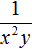
в числитель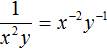
Пример 3. Поднять степени из знаменателя дроби
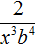
в числительПример 4. Поднять степень из знаменателя дроби в числитель
Пример 5. Опустить степень из числителя дроби в знаменатель
Пример 6. Степень из числителя дроби опустить в знаменатель, а степень из знаменателя поднять в числитель
Представлять дробь в виде произведения вовсе не обязательно. Если пропустить эту запись, то данный пример можно решить короче:
Пример 7. В дроби перенести из знаменателя в числитель только те степени, которые имеют отрицательные показатели:
Пример 8. Представить произведение 3x−5 в виде дроби, не содержащей степени с отрицательным показателем.
Перепишем произведение 3x−5 с помощью знака умножения:
3 × x−5
Сомножитель 3 оставим без изменений, а сомножитель x−5 заменим на тождественно равную ему дробь
Теперь согласно правилу умножения целого числа на дробь, умножим множитель 3 на числитель дроби . В результате образуется дробь
Пример 9. Представить произведение 3(x + y)−4 в виде дроби, не содержащей степени с отрицательным показателем.
Выражение состоит из сомножителей 3 и (x + y)−4. Сомножитель 3 оставим без изменений, а сомножитель (x + y)−4 заменим на тождественно равную ему дробь
Теперь умножим множитель 3 на числитель дроби . В результате образуется дробь
Пример 10. Представить дробь в виде произведения.
Чтобы решить этот пример, достаточно поднять степень x2 в числитель, изменив знак показателя этой степени на противоположный:
Как и в прошлых примерах дробь можно было представить в виде произведения . Затем воспользовавшись правилом , заменить сомножитель на тождественно равный ему сомножитель x−2.
Пример 11. Представить дробь в виде произведения.
Пример 12. Найти значение выражения
Поднимем степень 2−3 из знаменателя в числитель, а степень 10−2 из числителя опустим в знаменатель:
Вычислим значения степеней, содержащихся в числителе и в знаменателе:
Сократим полученную дробь на 25. Тогда останется дробь , значение которой равно 2.
А если бы мы не подняли степень 2−3 в числитель, и степень 10−2 не опустили в знаменатель, а стали вычислять каждую степень по отдельности, то получили бы не очень компактное решение:
Возведение числа 10 в целую отрицательную степень
Число 10 в отрицательную степень возводится таким же образом, как и другие числа. Например:
Замечаем, что количество нулей, которые получаются в ответе равны модулю показателя исходной степени. Например, в степени 10−2 модуль показателя равен 2. Это значит, что в ответе будет содержаться два нуля. Так оно и есть:
Чтобы возвести число 10 в отрицательную степень, нужно перед единицей записать количество нулей, равное модулю показателя исходной степени.
При этом после первого нуля следует поставить запятую. Примеры:
Представление чисел 0,1, 0,01, 0,001 в виде степени с основанием 10
Чтобы представить числа 0,1, 0,01, 0,001 в виде степени с основанием 10, нужно записать основание 10, и в качестве показателя указать отрицательный показатель, модуль которого равен количеству нулей исходного числа.
Представим число 0,1 в виде степени с основанием 10. Видим, что в числе 0,1 один нуль. Значит, число 0,1 в виде степени с основанием 10 будет представлено как 10−1. Показатель степени 10−1 равен −1. Модуль этого показателя равен количеству нулей в числе 0,1
0,1 = 10−1
Число 0,1 это результат деления , а эта дробь есть значение степени 10−1.
Пример 2. Представить число 0,01 в виде степени с основанием 10.
В числе 0,01 два нуля. Значит, число 0,01 в виде степени с основанием 10 будет представлено как 10−2. Показатель степени 10−2 равен −2. Модуль этого показателя равен количеству нулей в числе 0,01
0,01 = 10−2
Число 0,01 это результат деления , то есть , а эта дробь есть значение степени 10−2.
Пример 3. Представить число 0,001 в виде степени с основанием 10.
0,001 = 10−3
Пример 4. Представить число 0,0001 в виде степени с основанием 10.
0,0001 = 10−4
Пример 5. Представить число 0,00001 в виде степени с основанием 10.
0,00001 = 10−5
Стандартный вид числа
Запишем число 2 000 000 в виде произведения числа 2 и 1 000 000
2 × 1 000 000
Сомножитель 1 000 000 можно заменить на степень 106
2 × 106
Такой вид записи называют стандартным видом числа. Стандартный вид числа позволяет записывать в компактном виде как большие, так и маленькие числа.
Например, маленькое число 0,005 можно записать в виде произведения числа 5 и десятичной дроби 0,001.
5 × 0,001
Десятичную дробь 0,001 можно заменить на степень с 10−3
5 × 10−3
Значит, число 0,005 в стандартном виде будет выглядеть как 5 × 10−3
0,005 = 5 × 10−3
По стандартному виду числа можно вычислить изначальное число. Так, при записи числа 2 000 000 в стандартном виде, мы получили произведение 2 × 106. Если вычислить это произведение, то снова получим 2 000 000
2 × 106 = 2 × 1 000 000 = 2 000 000
А при записи числа 0,005 в стандартном виде мы получили произведение 5 × 10−3. Если вычислить это произведение, то получим 0,005
То есть записывая число в стандартном виде нужно записывать его так, чтобы сохранить его изначальное значение.
Стандартным видом числа называют запись вида a × 10n, где 1 ≤ a < 10 и n — целое число.
Число а это исходное число, которое надо записать в стандартном виде. Оно должно удовлетворять неравенству 1 ≤ a < 10. Чаще всего исходное число надо приводить к виду, при котором неравенство 1 ≤ a < 10 становится верным.
Например, представим число 12 в стандартном виде. Для начала проверим становится ли верным неравенство 1 ≤ a < 10 при подстановке числа 12 вместо а
1 ≤ 12 < 10
Неравенство верным не становится. Чтобы сделать неравенство верным, приведём число 12 к виду, при котором оно удовлетворяло бы данному неравенству. Для этого передвинем в числе 12 запятую влево на одну цифру:
1,2
Число 12 обратилось в число 1,2. Это число будет удовлетворять неравенству 1 ≤ a < 10
1 ≤ 1,2 < 10
Теперь наша задача состоит в том, чтобы записать произведение a × 10n. С числом а мы разобрались — этим числом у нас будет 1,2. А как подобрать степень с основанием 10?
После переноса запятой на одну цифру влево, число 12 утратило своё изначальное значение. Запятая на одну цифру влево двигается тогда, когда число делят на 10. А чтобы восстановить изначальное значение числа запятую нужно передвинуть обратно в правую сторону на одну цифру, то есть умножить число 1,2 на 10.
Значит, чтобы записать число 12 в стандартном виде, нужно представить его в виде произведения 1,2 × 10¹
12 = 1,2 × 10¹
Пример 2. Записать число 0,5 в стандартном виде.
Число 0,5 не удовлетворяет неравенству 1 ≤ a< 10, поэтому передвинем запятую в этом числе на одну цифру вправо. В результате получим число 5, которое удовлетворяет неравенству 1 ≤ a< 10.
Теперь запишем произведение вида a × 10n. Число a в данном случае это 5. А степень с основанием 10 надо выбрать так, чтобы произведение a × 10n стало равным числу 0,5. Число 0,5 получится если умножить число 5 на множитель 0,1, который представим в виде степени 10−1. В результате получим следующую запись:
0,5 = 5 × 10−1
Пример 3. Записать число 652 000 в стандартном виде.
Число 652 000 не удовлетворяет неравенству 1 ≤ a< 10, поэтому передвинем запятую в этом числе на пять цифр влево. В результате получим число 6,52000 которое удовлетворяет неравенству 1 ≤ a< 10.
Теперь запишем произведение вида a × 10n. Число a в данном случае это 6,52000. А степень с основанием 10 надо выбрать так, чтобы произведение a × 10n стало равным числу 652 000. Число 652 000 получится если число 6,52000 умножить на 100 000, а это есть степень 105. В результате получим следующую запись:
652 000 = 6,52000 × 105
Нули в конце десятичной дроби 6,52000 можно отбросить. Тогда получим более компактную запись:
652 000 = 6,52 × 105
Пример 5. Записать число 1 024 000 в стандартном виде.
Число 1 024 000 не удовлетворяет неравенству 1 ≤ a< 10, поэтому передвинем запятую в этом числе на шесть цифр влево. В результате получим число 1,024000 которое удовлетворяет неравенству 1 ≤ a< 10.
Теперь запишем произведение вида a × 10n. Число a в данном случае это 1,024000 . А степень с основанием 10 надо выбрать так, чтобы произведение a × 10n было равно изначальному числу 1 024 000. Число 1 024 000 получится если число 1,024000 умножить на 1 000 000, а это есть степень 106. В результате получим следующую запись:
1 024 000 = 1,024000 × 106
Нули в конце десятичной дроби 1,024000 можно отбросить:
1 024 000 = 1,024 × 106
Отбрасывать можно только те нули, которые располагаются в конце, и после которых нет других цифр, бóльших нуля. В приведённом примере были отброшены только три нуля, а нуль располагавшийся между запятой и цифрой 2 был сохранен, несмотря на то, что он тоже располагался после запятой.
Пример 6. Записать число 0,000325 в стандартном виде.
Передвинем в данном числе запятую так, чтобы оно удовлетворяло неравенству 1 ≤ a< 10. В результате получим число 3,25
Теперь запишем произведение вида a × 10n. Число a в данном случае это 3,25. А степень с основанием 10 надо выбрать так, чтобы произведение a × 10n было равно изначальному числу 0,000325. Число 0,000325 получится если число 3,25 умножить на множитель 0,0001 который представим в виде степени 10−4. В результате получим следующую запись:
0,000325 = 3,25 × 10−4